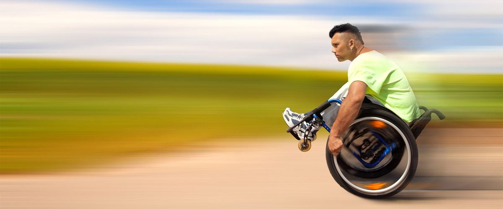

Secondary positioning devices for spasticity management
Training sessions and workshops on using secondary positioning devices for spasticity management. Seminars sponsored by Bodypoint, Inc.
Switzerland & Southern Germany
Superseating is the consultancy of physical therapist Bart Van der Heyden. For more than 25 years he has helped clinicians, manufacturers and distributors get seating, mobility and wound care right.


From a one-hour lecture for a therapy team to the clinical strategy behind a new device: every engagement starts from daily clinical practice.
Client-centred training on seating, positioning and pressure care, from a one-hour lecture to a full-day hands-on workshop.
The right clinical, regulatory, marketing and communication strategy for your device in Europe, Asia and the Middle East.
Product development in wound care, seating and mobility: needs, focus groups, prototypes, evaluation and design changes.
Stronger relationships with prescribers and end users across Europe, the US, Asia and the Middle East.
Workshops, lectures and seminars, adapted to your audience and delivered in English, Dutch, French or German.

Bart Van der Heyden is a licensed physical therapist specialised in wheelchair seating and mobility, and in wound care. He has practised in Belgium, Germany and the USA.
Based in Belgium, he travels the world for lectures, educational events and hands-on sessions. He still assesses many wheelchair users at De Kine, the physical therapy practice he works in, and advises several manufacturers on the clinical application, design and functionality of their devices.
Bart’s programs are always interactive and fun. When you attend one, wear your tennis shoes, as you will be engaged and active throughout the day.
Training sessions and workshops on using secondary positioning devices for spasticity management. Seminars sponsored by Bodypoint, Inc.
Switzerland & Southern Germany
Training sessions and workshops on comfort wheelchair seating for clinicians. Seminars sponsored by Netti by AluRehab.
South Korea & China
Presentation with Takashi Kinose: assessment and measuring outcomes in clinical settings in Japan when using an innovative tilt-in-space wheelchair. Bart presented the data collection protocol and the outcome measures used by Mr Kinose in Japan.
Oslo, Norway
Ask a question about seating, mobility or wound care, or tell me about your project. I'm always happy to share my skills and knowledge, with no obligation.